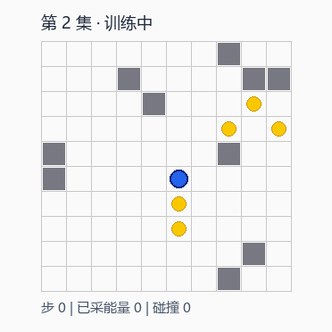
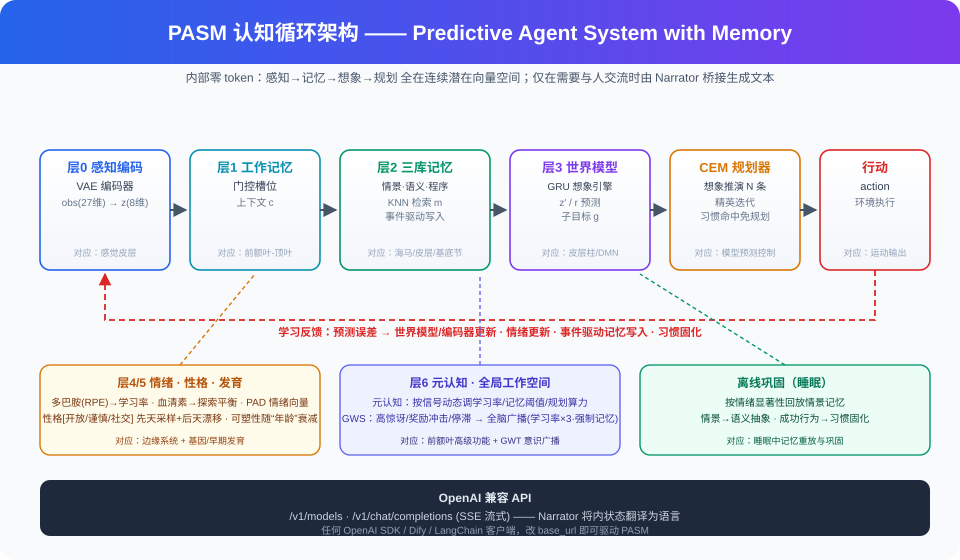

Predictive Agent System with Memory · 内部零 token：感知 → 记忆 → 想象 → 行动
每个智能体由「先天性格 × 后天经历」长成，内心（情绪/记忆/性格漂移）全程可解释，低算力、可持续在线学习。


消融实验中关闭情绪/神经调节，奖励恶化 11.7、撞墙率 ×2.3 —— 多巴胺/血清素不是装饰。
同环境同预算，谨慎型碰撞比冒险型少 31%；冒险型固化习惯最多。先天种子 × 后天经历生效。
情景记忆达 2 万条后启用 ANN 索引，查询时延恒定 ~0.6ms（暴力检索 2ms 且线性增长）。
CPU 即可运行，无需 GPU；适合常驻后台的成长型应用。
在线学习性格成长情景/习惯记忆情绪可解释低算力睡眠巩固
游戏 NPC、虚拟宠物、养成陪伴、仿真智能体、情绪-行为对照实验。
百科问答长文写作代码生成复杂工具链
互补方案已设计：PASM 提供"记忆/情绪/在线学习"，LLM 负责"语言/常识"（双系统 R0）。
from openai import OpenAI
client = OpenAI(api_key="你的Key", base_url="https://你的域名/v1")
resp = client.chat.completions.create(
model="pasm-agent",
messages=[{"role":"user","content":"去探索这个世界，然后说说你的感受"}])
print(resp.choices[0].message.content)
# 「我在想象中推演了几条路线后，决定向右移动。收获了能量块！
# 多巴胺飙升，我记住了这个时刻。发育阶段：婴儿期——我刚刚诞生……」每个角色一个个体：不同性格种子、会记住玩家、会成长；下线存档、上线延续。
从"婴儿期"养起，性格由玩家的互动方式塑造——情绪/记忆可视化就是你的 UI。
FAQ 知识交给检索/LLM，PASM 负责接待语气、情绪安抚与满意度状态的实时判断。
调节性格参数观察行为分化，就是亲手做消融实验；适合认知科学、RL 教学。
零 token 认知循环的教学最小实现（~260 行单文件）：适合学习、fork、二次实验。
https://gitee.com/arronzheng/PASM-Lite
七层认知架构、情绪/性格/元认知/全局广播/睡眠巩固、ANN 记忆、OpenAI 兼容 API 与全部实验数据。 以私有方式维护（不公开下载），按需授权与协作。
只讲能力与接入方式，不含任何实现细节与源码。
PASM-Lite（教学版，MIT）：
gitee.com/arronzheng/PASM-Lite
问题/讨论/合作意向直接在仓库提 issue
完整引擎与 OpenAI 兼容 API 以私有方式提供，支持：演示环境 / NDA 看代码 /
游戏与客服 POC / 联合研发 / 定制托管。
请在 PASM-Lite 仓库提 issue 留言说明来意，会尽快回复。